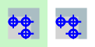
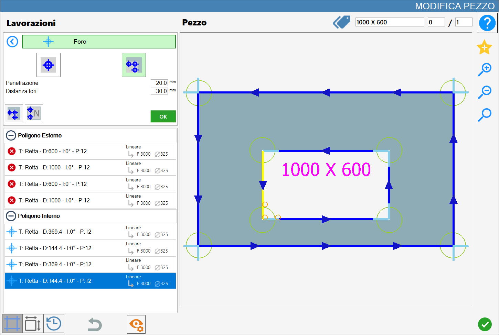
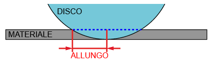
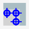

In questa pagina è possibile eseguire un singolo foro in una posizione specifica oppure eseguire una serie di fori a distanza fissata.

Tipologie di lavorazione
Per utilizzare questa lavorazione, occorre innanzitutto scegliere una delle due modalità disponibili, selezionando il pulsante corrispondente:
Le modalità 'Foro nel materiale' e 'Rimozione Scodo' sono mutuamente esclusive: l'attivazione di una esclude automaticamente l'altra.
 | Foro nel materiale |
 | Rimozione scodo |
Foro nel materiale
Selezionando questa modalità di lavorazione, il vertice attualmente selezionato verrà evidenziato in arancione e, a partire da esso, verrà proiettata l’anteprima del foro da aggiungere, anch'essa visualizzata in arancione e generata in base ai parametri impostati.

Parametri
Penetrazione | Indica la profondità che la lavorazione deve raggiungere. |
Distanza asse X | Distanza sull’asse X dal punto iniziale del taglio selezionato, in corrispondenza della quale verrà creato il foro. |
Distanza asse Y | Distanza sull’asse Y dal punto iniziale del taglio selezionato, in corrispondenza della quale verrà creato il foro. |
Rispetto al punto selezionato, viene considerata positiva la parte a destra del cerchio (per le X) e la parte sopra del cerchio (per le Y), come mostrato in figura.

Esecuzione Foro nel materiale
È possibile applicare la lavorazione premendo il pulsante a sinistra del taglio opportuno nella lista dei poligoni.
Un’icona rossa con una 'X' indica che la lavorazione non può essere applicata al taglio desiderato.
Una volta selezionato un vertice e impostati i parametri di distanza e penetrazione sarà possibile confermare la lavorazione premendo il tasto verde OK.
A ogni foro inserito con successo nel materiale corrisponde l’aggiornamento dell’anteprima e l’inserimento automatico nella sezione 'Lavorazioni aggiuntive' sulla sinistra:

A differenza di Rimozione Scodo, tuttavia, è possibile selezionare anche i punti centrali degli archi, evidenziati nell’anteprima insieme a tutti gli altri punti validi come riferimento per l’inserimento dei fori nel materiale
Rimozione Scodo
Attivando questa modalità, il vertice selezionato diventa il punto di origine di un’anteprima arancione composta da più fori, la cui dimensione dipende dal foretto montato e la cui quantità è determinata dal parametro Distanza fori.

Parametri Rimozione Scodo
Penetrazione | Indica la profondità che la lavorazione deve raggiungere. |
Distanza fori automatici | Determina la distanza tra i punti di origine dei fori. |
Esecuzione di Rimozione Scodo
È possibile applicare la lavorazione premendo il pulsante a sinistra del taglio opportuno nella lista dei poligoni.
Un’icona rossa con una 'X' indica che la lavorazione non può essere applicata al taglio desiderato.
La modalità Rimozione Scodo può essere utilizzata tra due tagli consecutivi, indipendentemente dal fatto che siano entrambi di tipo retta, entrambi di tipo curva, oppure uno di ciascun tipo.

Il foro viene aggiunto alla lista del poligono interno e identifica la lavorazione di rimozione dello scodo.
Viene fornito di seguito un esempio di Rimozione Scodo applicato su due lati adiacenti nel poligono interno:

Pulsanti disponibili con modalità Rimozione Scodo
 | Fori concavi |
|---|---|
 | Numero fori |